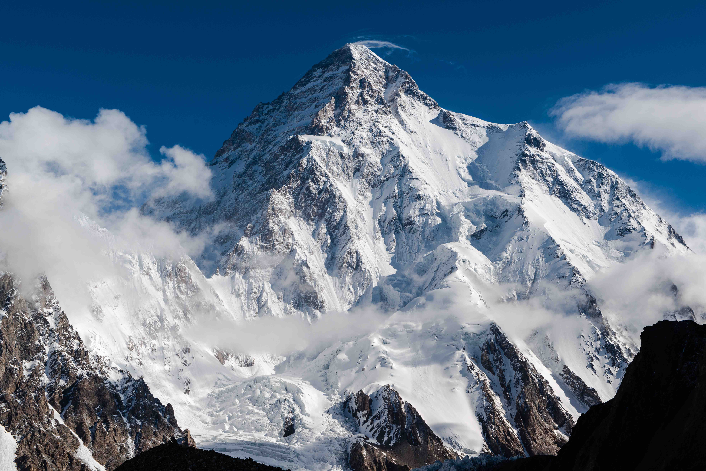

Горные системы во всем мире своеобразны и необычны. Великолепные пейзажи вызывают у людей настоящее восхищение. Некоторые возвышенности представляют собой очень сложные объекты альпинизма, которые могут покорить только профессионалы. Однако существуют горные системы, до вершин которых доберутся даже обычные люди.
Гора – это разновидность рельефа, для которой характерен резкий подъем местности с явными склонами и подножием.
Также существуют другие виды. Подводные горные хребты, выступающие над поверхностью, являются островами. По происхождению возвышенности делятся на вулканические и тектоноденудационные. На высоких горных массивах можно встретить несколько видов микрорельефа. Разные участки склонов отличаются своим климатом.
| Гора | Высота (м) | Местоположение |
|---|---|---|
| Эверест | 8848 | Гималаи, Непал/Китай |
| Аконкагуа | 6962 | Анды, Аргентина/Чили |
| Килиманджаро | 5895 | Африка, Танзания |